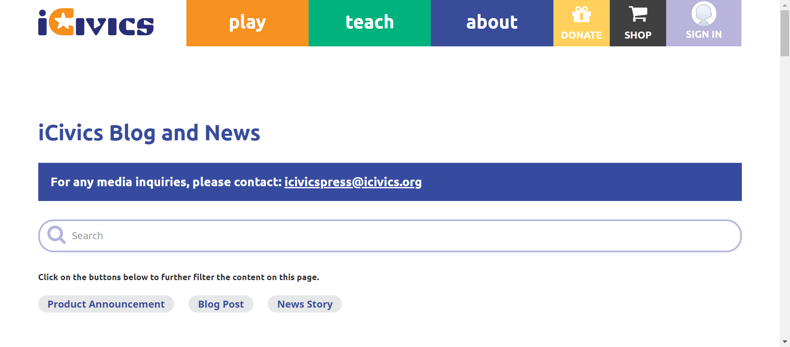
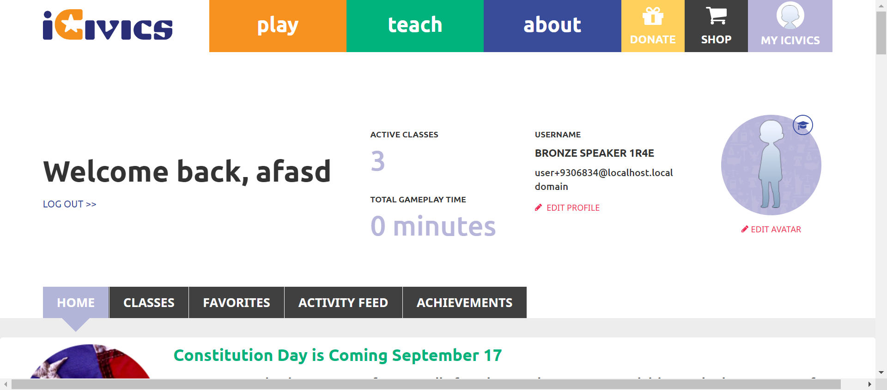

Tests
22 test(s) passed
18 test(s) failed, 0 others
Steps
147 step(s) passed
26 step(s) failed, 0 others
Tests
-
HomepageHeaderplay Jun 1, 2022 12:55:13 PM failJun 1, 2022 12:55:13 PM Jun 1, 2022 12:56:23 PM 0h 1m 10s+0ms
-
C22 - When you select About, does a submenu open below the About button?
Jun 1, 2022 10:08:14 PM 0h 2m 27s+545ms failStatus Timestamp Details check_circle 12:55:46 PM The Element about clicked 
check_circle 12:55:49 PM Aboutsubmenu display successfully 
cancel 12:56:19 PM The Element with locator:XPATH&//a[@class='logo navbar-btn pull-left'] Not Found with value: //a[@class='logo navbar-btn pull-left'] 
check_circle 12:56:23 PM aboutbutton Verified successfully 
-
-
HomepageHeaderplay Jun 1, 2022 12:58:03 PM failJun 1, 2022 12:58:03 PM Jun 1, 2022 12:59:07 PM 0h 1m 4s+0ms
-
C22 - When you select About, does a submenu open below the About button?
Jun 1, 2022 10:08:14 PM 0h 2m 27s+555ms failStatus Timestamp Details check_circle 12:58:33 PM The Element about clicked 
check_circle 12:58:36 PM Aboutsubmenu display successfully 
cancel 12:59:07 PM The Element with locator:XPATH&//a[@class='logo navbar-btn pull-left'] Not Found with value: //a[@class='logo navbar-btn pull-left']
-
-
HomepageHeaderplay Jun 1, 2022 01:02:55 PM failJun 1, 2022 01:02:55 PM Jun 1, 2022 01:04:02 PM 0h 1m 7s+0ms
-
C22 - When you select About, does a submenu open below the About button?
Jun 1, 2022 10:08:14 PM 0h 2m 27s+560ms failStatus Timestamp Details check_circle 1:03:27 PM The Element about clicked 
check_circle 1:03:30 PM Aboutsubmenu display successfully 
check_circle 1:03:59 PM The Element clicked 
cancel 1:04:02 PM aboutbutton is not Verified successfully 
-
-
HomepageHeaderplay Jun 1, 2022 01:22:38 PM passJun 1, 2022 01:22:38 PM Jun 1, 2022 01:25:05 PM 0h 2m 27s+0ms
-
C23 - Do you see links to About iCivics, Who We Are, Our Strategy, CIVXNOW, Our Team, Blog, and Contact Us in the submenu?
Jun 1, 2022 10:08:14 PM 0h 2m 27s+565ms passStatus Timestamp Details check_circle 1:23:11 PM The mouse over by xpath : (//a[@href='/about'])[3] is performed. 
check_circle 1:23:11 PM The element [[ChromeDriver: chrome on WINDOWS (4fda7bfb89d20bc4a9c8c0f6d835571b)] -> xpath: (//li[@class='first about icivics']/a)[2]] is visible 
check_circle 1:23:12 PM The expected text contains the actual ABOUT ICIVICS 
check_circle 1:23:32 PM The Element ABOUT ICIVICS clicked 
check_circle 1:23:32 PM The expected https://staging.d9.icivics.org/about url as same as the https://staging.d9.icivics.org/about actual url. 
check_circle 1:23:33 PM The expected text contains the actual iCivics reimagines civic education for American democracy 
check_circle 1:23:33 PM The mouse over by xpath : (//a[@href='/about'])[3] is performed. 
check_circle 1:23:33 PM The element [[ChromeDriver: chrome on WINDOWS (4fda7bfb89d20bc4a9c8c0f6d835571b)] -> xpath: (//li[contains(@class,'who we')]//a)[2]] is visible 
check_circle 1:23:33 PM The expected text contains the actual WHO WE ARE 
check_circle 1:23:59 PM The Element WHO WE ARE clicked 
check_circle 1:23:59 PM The expected https://staging.icivics.org/who-we-are url as same as the https://staging.icivics.org/who-we-are actual url. 
check_circle 1:24:03 PM The mouse over by xpath : (//a[@href='/about'])[3] is performed. 
check_circle 1:24:03 PM The element [[ChromeDriver: chrome on WINDOWS (4fda7bfb89d20bc4a9c8c0f6d835571b)] -> xpath: (//li[@class='our strategy']//a)[2]] is visible 
check_circle 1:24:03 PM The expected text contains the actual OUR STRATEGY 
check_circle 1:24:24 PM The Element OUR STRATEGY clicked 
check_circle 1:24:24 PM The expected https://staging.icivics.org/our-strategy url as same as the https://staging.icivics.org/our-strategy actual url. 
check_circle 1:24:27 PM The mouse over by xpath : (//a[@href='/about'])[3] is performed. 
check_circle 1:24:27 PM The element [[ChromeDriver: chrome on WINDOWS (4fda7bfb89d20bc4a9c8c0f6d835571b)] -> xpath: (//li[@class='civxnow']//a)[2]] is visible 
check_circle 1:24:27 PM The expected text contains the actual CIVXNOW 
check_circle 1:24:36 PM The Element CIVXNOW clicked 
check_circle 1:24:37 PM The expected https://civxnow.org/ url as same as the https://civxnow.org/ actual url. check_circle 1:24:39 PM The mouse over by xpath : (//a[@href='/about'])[3] is performed. 
check_circle 1:24:40 PM The element [[ChromeDriver: chrome on WINDOWS (4fda7bfb89d20bc4a9c8c0f6d835571b)] -> xpath: (//a[@href='/our-team'])[2]] is visible 
check_circle 1:24:40 PM The expected text contains the actual OUR TEAM 
check_circle 1:24:48 PM The Element OUR TEAM clicked check_circle 1:24:48 PM The expected https://staging.icivics.org/our-team url as same as the https://staging.icivics.org/our-team actual url. 
check_circle 1:24:51 PM The mouse over by xpath : (//a[@href='/about'])[3] is performed. 
check_circle 1:24:51 PM The element [[ChromeDriver: chrome on WINDOWS (4fda7bfb89d20bc4a9c8c0f6d835571b)] -> xpath: (//li[@class='blog']//a)[2]] is visible 
check_circle 1:24:51 PM The expected text contains the actual BLOG 
check_circle 1:24:55 PM The Element BLOG clicked check_circle 1:24:55 PM The expected https://staging.d9.icivics.org/news?keys=&tid%5B1%5D=1 url as same as the https://staging.d9.icivics.org/news?keys=&tid%5B1%5D=1 actual url. 
check_circle 1:24:55 PM The expected text contains the actual iCivics Blog and News 
check_circle 1:24:58 PM The mouse over by xpath : (//a[@href='/about'])[3] is performed. 
check_circle 1:24:58 PM The element [[ChromeDriver: chrome on WINDOWS (4fda7bfb89d20bc4a9c8c0f6d835571b)] -> xpath: (//a[@href='/contact'])[2]] is visible 
check_circle 1:24:58 PM The expected text contains the actual CONTACT US 
check_circle 1:25:03 PM The Element CONTACT US clicked 
check_circle 1:25:03 PM The expected https://icivics.zendesk.com/hc/en-us/requests/new url as same as the https://icivics.zendesk.com/hc/en-us/requests/new actual url. check_circle 1:25:05 PM All links in the About dropdown is verified sucessfully 
-
-
HomepageHeaderplay Jun 1, 2022 01:33:05 PM passJun 1, 2022 01:33:05 PM Jun 1, 2022 01:33:18 PM 0h 0m 13s+0ms
-
C23 - Do you see links to About iCivics, Who We Are, Our Strategy, CIVXNOW, Our Team, Blog, and Contact Us in the submenu?
Jun 1, 2022 10:08:14 PM 0h 2m 27s+583ms passStatus Timestamp Details check_circle 1:33:15 PM The Element about clicked 
check_circle 1:33:18 PM Aboutsubmenu display successfully 
-
-
HomepageHeaderplay Jun 1, 2022 01:33:51 PM passJun 1, 2022 01:33:51 PM Jun 1, 2022 01:34:02 PM 0h 0m 11s+0ms
-
C23 - Do you see links to About iCivics, Who We Are, Our Strategy, CIVXNOW, Our Team, Blog, and Contact Us in the submenu?
Jun 1, 2022 10:08:14 PM 0h 2m 27s+586ms passStatus Timestamp Details check_circle 1:33:58 PM The Element about clicked 
check_circle 1:34:02 PM Aboutsubmenu display successfully 
-
-
HomepageHeaderplay Jun 1, 2022 01:35:18 PM passJun 1, 2022 01:35:18 PM Jun 1, 2022 01:35:51 PM 0h 0m 33s+0ms
-
C23 - Do you see links to About iCivics, Who We Are, Our Strategy, CIVXNOW, Our Team, Blog, and Contact Us in the submenu?
Jun 1, 2022 10:08:14 PM 0h 2m 27s+591ms passStatus Timestamp Details check_circle 1:35:48 PM The Element about clicked 
check_circle 1:35:51 PM Aboutsubmenu display successfully 
-
-
HomepageHeaderplay Jun 1, 2022 02:12:13 PM passJun 1, 2022 02:12:13 PM Jun 1, 2022 02:12:48 PM 0h 0m 35s+0ms
-
C23 - Do you see links to About iCivics, Who We Are, Our Strategy, CIVXNOW, Our Team, Blog, and Contact Us in the submenu?
Jun 1, 2022 10:08:14 PM 0h 2m 27s+594ms passStatus Timestamp Details check_circle 2:12:44 PM The Element about clicked 
check_circle 2:12:48 PM Aboutsubmenu display successfully 
-
-
HomepageHeaderplay Jun 1, 2022 02:14:05 PM passJun 1, 2022 02:14:05 PM Jun 1, 2022 02:14:16 PM 0h 0m 11s+0ms
-
C23 - Do you see links to About iCivics, Who We Are, Our Strategy, CIVXNOW, Our Team, Blog, and Contact Us in the submenu?
Jun 1, 2022 10:08:14 PM 0h 2m 27s+597ms passStatus Timestamp Details check_circle 2:14:13 PM The Element about clicked 
check_circle 2:14:16 PM Aboutsubmenu display successfully 
-
-
HomepageHeaderplay Jun 1, 2022 02:26:18 PM passJun 1, 2022 02:26:18 PM Jun 1, 2022 02:29:17 PM 0h 2m 59s+0ms
-
C24 - When you select a link in the submenu, are you navigated to the appropriate page?
Jun 1, 2022 10:08:14 PM 0h 2m 27s+602ms passStatus Timestamp Details check_circle 2:26:51 PM The mouse over by xpath : (//a[@href='/about'])[3] is performed. 
check_circle 2:26:51 PM The element [[ChromeDriver: chrome on WINDOWS (378589677f909239900e25b6891dbc3d)] -> xpath: (//li[@class='first about icivics']/a)[2]] is visible 
check_circle 2:26:51 PM The expected text contains the actual ABOUT ICIVICS 
check_circle 2:27:12 PM The Element ABOUT ICIVICS clicked check_circle 2:27:12 PM The expected https://staging.d9.icivics.org/about url as same as the https://staging.d9.icivics.org/about actual url. 
check_circle 2:27:12 PM The expected text contains the actual iCivics reimagines civic education for American democracy 
check_circle 2:27:12 PM The mouse over by xpath : (//a[@href='/about'])[3] is performed. 
check_circle 2:27:13 PM The element [[ChromeDriver: chrome on WINDOWS (378589677f909239900e25b6891dbc3d)] -> xpath: (//li[contains(@class,'who we')]//a)[2]] is visible 
check_circle 2:27:13 PM The expected text contains the actual WHO WE ARE 
check_circle 2:27:39 PM The Element WHO WE ARE clicked 
check_circle 2:27:39 PM The expected https://staging.icivics.org/who-we-are url as same as the https://staging.icivics.org/who-we-are actual url. 
check_circle 2:27:42 PM The mouse over by xpath : (//a[@href='/about'])[3] is performed. 
check_circle 2:27:43 PM The element [[ChromeDriver: chrome on WINDOWS (378589677f909239900e25b6891dbc3d)] -> xpath: (//li[@class='our strategy']//a)[2]] is visible 
check_circle 2:27:43 PM The expected text contains the actual OUR STRATEGY 
check_circle 2:28:04 PM The Element OUR STRATEGY clicked 
check_circle 2:28:04 PM The expected https://staging.icivics.org/our-strategy url as same as the https://staging.icivics.org/our-strategy actual url. 
check_circle 2:28:07 PM The mouse over by xpath : (//a[@href='/about'])[3] is performed. 
check_circle 2:28:07 PM The element [[ChromeDriver: chrome on WINDOWS (378589677f909239900e25b6891dbc3d)] -> xpath: (//li[@class='civxnow']//a)[2]] is visible 
check_circle 2:28:07 PM The expected text contains the actual CIVXNOW 
check_circle 2:28:16 PM The Element CIVXNOW clicked 
check_circle 2:28:17 PM The expected https://civxnow.org/ url as same as the https://civxnow.org/ actual url. check_circle 2:28:19 PM The mouse over by xpath : (//a[@href='/about'])[3] is performed. 
check_circle 2:28:19 PM The element [[ChromeDriver: chrome on WINDOWS (378589677f909239900e25b6891dbc3d)] -> xpath: (//a[@href='/our-team'])[2]] is visible 
check_circle 2:28:20 PM The expected text contains the actual OUR TEAM 
check_circle 2:28:28 PM The Element OUR TEAM clicked 
check_circle 2:28:29 PM The expected https://staging.icivics.org/our-team url as same as the https://staging.icivics.org/our-team actual url. check_circle 2:28:32 PM The mouse over by xpath : (//a[@href='/about'])[3] is performed. 
check_circle 2:28:32 PM The element [[ChromeDriver: chrome on WINDOWS (378589677f909239900e25b6891dbc3d)] -> xpath: (//li[@class='blog']//a)[2]] is visible 
check_circle 2:28:32 PM The expected text contains the actual BLOG 
check_circle 2:28:53 PM The Element BLOG clicked check_circle 2:28:53 PM The expected https://staging.d9.icivics.org/news?keys=&tid%5B1%5D=1 url as same as the https://staging.d9.icivics.org/news?keys=&tid%5B1%5D=1 actual url. 
check_circle 2:28:53 PM The expected text contains the actual iCivics Blog and News 
check_circle 2:28:56 PM The mouse over by xpath : (//a[@href='/about'])[3] is performed. 
check_circle 2:28:56 PM The element [[ChromeDriver: chrome on WINDOWS (378589677f909239900e25b6891dbc3d)] -> xpath: (//a[@href='/contact'])[2]] is visible 
check_circle 2:28:56 PM The expected text contains the actual CONTACT US 
check_circle 2:29:00 PM The Element CONTACT US clicked 
check_circle 2:29:01 PM The expected https://icivics.zendesk.com/hc/en-us/requests/new url as same as the https://icivics.zendesk.com/hc/en-us/requests/new actual url. 
check_circle 2:29:17 PM All links in the About dropdown is verified sucessfully 
-
-
HomepageHeaderplay Jun 1, 2022 02:39:06 PM passJun 1, 2022 02:39:06 PM Jun 1, 2022 02:39:40 PM 0h 0m 34s+0ms
-
C27 - When you select About again while the submenu is open, does the submenu close?
Jun 1, 2022 10:08:14 PM 0h 2m 27s+615ms passStatus Timestamp Details check_circle 2:39:37 PM The Element teach clicked 
check_circle 2:39:40 PM The Element teach clicked
-
-
HomepageHeaderplay Jun 1, 2022 02:41:04 PM failJun 1, 2022 02:41:04 PM Jun 1, 2022 02:42:22 PM 0h 1m 18s+0ms
-
C22 - When you select About, does a submenu open below the About button?
Jun 1, 2022 10:08:14 PM 0h 2m 27s+619ms failStatus Timestamp Details check_circle 2:41:35 PM The Element about clicked 
check_circle 2:41:39 PM Aboutsubmenu display successfully 
check_circle 2:42:06 PM The Element clicked 
cancel 2:42:09 PM aboutbutton is not Verified successfully 
-
C23 - Do you see links to About iCivics, Who We Are, Our Strategy, CIVXNOW, Our Team, Blog, and Contact Us in the submenu?
Jun 1, 2022 10:08:14 PM 0h 2m 27s+620ms failStatus Timestamp Details cancel 2:42:13 PM The Element with locator:XPATH&(//a[@title='Learn how you can financially support and fund iCivics.'])[3] Not Found with value: (//a[@title='Learn how you can financially support and fund iCivics.'])[3] 
-
C24 - When you select a link in the submenu, are you navigated to the appropriate page?
Jun 1, 2022 10:08:14 PM 0h 2m 27s+621ms pass -
C24 - When you select a link in the submenu, are you navigated to the appropriate page?
Jun 1, 2022 10:08:14 PM 0h 2m 27s+622ms pass -
C27 - When you select About again while the submenu is open, does the submenu close?
Jun 1, 2022 10:08:14 PM 0h 2m 27s+622ms failStatus Timestamp Details cancel 2:42:22 PM The Element with locator:XPATH&(//a[@title='Learn how you can financially support and fund iCivics.'])[3] Not Found with value: (//a[@title='Learn how you can financially support and fund iCivics.'])[3] 
-
-
HomepageHeaderplay Jun 1, 2022 03:11:17 PM passJun 1, 2022 03:11:17 PM Jun 1, 2022 03:11:52 PM 0h 0m 35s+0ms
-
C27 - When you select About again while the submenu is open, does the submenu close?
Jun 1, 2022 10:08:14 PM 0h 2m 27s+625ms passStatus Timestamp Details check_circle 3:11:49 PM The Element about clicked 
check_circle 3:11:52 PM The Element about clicked 
-
-
HomepageHeaderplay Jun 1, 2022 03:14:05 PM passJun 1, 2022 03:14:05 PM Jun 1, 2022 03:14:39 PM 0h 0m 34s+0ms
-
C27 - When you select About again while the submenu is open, does the submenu close?
Jun 1, 2022 10:08:14 PM 0h 2m 27s+628ms passStatus Timestamp Details check_circle 3:14:35 PM The Element about clicked 
check_circle 3:14:39 PM The Element about clicked 
-
-
HomepageHeaderplay Jun 1, 2022 03:49:06 PM failJun 1, 2022 03:49:06 PM Jun 1, 2022 03:49:21 PM 0h 0m 15s+0ms
-
C29 - Can you see an appropriate icon for Donate?
Jun 1, 2022 10:08:14 PM 0h 2m 27s+630ms failStatus Timestamp Details cancel 3:49:21 PM The Element with locator:XPATH&(//a[@title='Donate money to iCivics quickly and easily online.'])[2] Not Found with value: (//a[@title='Donate money to iCivics quickly and easily online.'])[2] 
-
-
HomepageHeaderplay Jun 1, 2022 03:49:51 PM passJun 1, 2022 03:49:51 PM Jun 1, 2022 03:49:59 PM 0h 0m 8s+0ms
-
C29 - Can you see an appropriate icon for Donate?
Jun 1, 2022 10:08:14 PM 0h 2m 27s+633ms passStatus Timestamp Details check_circle 3:49:59 PM Donatebutton Verified successfully 
-
-
HomepageHeaderplay Jun 1, 2022 04:22:40 PM passJun 1, 2022 04:22:40 PM Jun 1, 2022 04:22:58 PM 0h 0m 18s+0ms
-
C30 - When you select Donate, are you directed to https://give.icivics.org/?
Jun 1, 2022 10:08:14 PM 0h 2m 27s+635ms passStatus Timestamp Details check_circle 4:22:58 PM The Element DONATE clicked 
-
-
HomepageHeaderplay Jun 1, 2022 05:27:01 PM passJun 1, 2022 05:27:01 PM Jun 1, 2022 05:27:35 PM 0h 0m 34s+0ms
-
C30 - When you select Donate, are you directed to https://give.icivics.org/?
Jun 1, 2022 10:08:14 PM 0h 2m 27s+638ms passStatus Timestamp Details check_circle 5:27:35 PM Shopbutton Verified successfully 
-
-
HomepageHeaderplay Jun 1, 2022 05:28:30 PM passJun 1, 2022 05:28:30 PM Jun 1, 2022 05:29:05 PM 0h 0m 35s+0ms
-
C31 - Can you see an appropriate icon for Shop?
Jun 1, 2022 10:08:14 PM 0h 2m 27s+640ms passStatus Timestamp Details check_circle 5:29:05 PM Shopbutton Verified successfully 
-
-
HomepageHeaderplay Jun 1, 2022 05:38:23 PM passJun 1, 2022 05:38:23 PM Jun 1, 2022 05:38:38 PM 0h 0m 15s+0ms
-
C32 - When you select Shop, are you directed to https://icivics.myshopify.com/?
Jun 1, 2022 10:08:14 PM 0h 2m 27s+642ms passStatus Timestamp Details check_circle 5:38:38 PM The Element SHOP clicked 
-
-
HomepageHeaderplay Jun 1, 2022 06:12:42 PM failJun 1, 2022 06:12:42 PM Jun 1, 2022 06:13:56 PM 0h 1m 14s+0ms
-
C32 - When you select Shop, are you directed to https://icivics.myshopify.com/?
Jun 1, 2022 10:08:14 PM 0h 2m 27s+644ms failStatus Timestamp Details check_circle 6:12:56 PM The Element SHOP clicked 
cancel 6:13:26 PM Unable to find the given element (//a[@title='Shop iCivics.'])[2] :org.openqa.selenium.TimeoutException: Expected condition failed: waiting for visibility of element located by By.xpath: (//a[@title='Shop iCivics.'])[2] (tried for 10 second(s) with 500 milliseconds interval) cancel 6:13:56 PM The Element with locator:XPATH&(//a[@title='Shop iCivics.'])[2] Not Found with value: (//a[@title='Shop iCivics.'])[2] 
-
-
HomepageHeaderplay Jun 1, 2022 06:14:36 PM failJun 1, 2022 06:14:36 PM Jun 1, 2022 06:15:49 PM 0h 1m 13s+0ms
-
C32 - When you select Shop, are you directed to https://icivics.myshopify.com/?
Jun 1, 2022 10:08:14 PM 0h 2m 27s+647ms failStatus Timestamp Details check_circle 6:14:49 PM The Element SHOP clicked 
cancel 6:15:19 PM Unable to find the given element (//a[@title='Shop iCivics.'])[2] :org.openqa.selenium.TimeoutException: Expected condition failed: waiting for visibility of element located by By.xpath: (//a[@title='Shop iCivics.'])[2] (tried for 10 second(s) with 500 milliseconds interval) cancel 6:15:49 PM The Element with locator:XPATH&(//a[@title='Shop iCivics.'])[2] Not Found with value: (//a[@title='Shop iCivics.'])[2] 
-
-
HomepageHeaderplay Jun 1, 2022 06:18:06 PM failJun 1, 2022 06:18:06 PM Jun 1, 2022 06:19:19 PM 0h 1m 13s+0ms
-
C32 - When you select Shop, are you directed to https://icivics.myshopify.com/?
Jun 1, 2022 10:08:14 PM 0h 2m 27s+650ms failStatus Timestamp Details check_circle 6:18:18 PM The Element SHOP clicked cancel 6:18:48 PM Unable to find the given element (//a[@title='Shop iCivics.'])[2] :org.openqa.selenium.TimeoutException: Expected condition failed: waiting for visibility of element located by By.xpath: (//a[@title='Shop iCivics.'])[2] (tried for 10 second(s) with 500 milliseconds interval) 
cancel 6:19:19 PM The Element with locator:XPATH&(//a[@title='Shop iCivics.'])[2] Not Found with value: (//a[@title='Shop iCivics.'])[2] 
-
-
HomepageHeaderplay Jun 1, 2022 06:47:04 PM passJun 1, 2022 06:47:04 PM Jun 1, 2022 06:47:14 PM 0h 0m 10s+0ms
-
C33 - If you are not signed in, do you see a Sign In button instead of My iCivics?
Jun 1, 2022 10:08:14 PM 0h 2m 27s+652ms passStatus Timestamp Details check_circle 6:47:14 PM Signinbutton Verified successfully 
-
-
HomepageHeaderplay Jun 1, 2022 07:39:10 PM failJun 1, 2022 07:39:10 PM Jun 1, 2022 07:40:16 PM 0h 1m 6s+0ms
-
C34 - If you are signed in, do you see a My iCivics button instead of Sign In?
Jun 1, 2022 10:08:14 PM 0h 2m 27s+655ms failStatus Timestamp Details check_circle 7:39:19 PM The Element SIGN IN clicked 
check_circle 7:39:21 PM The Element SIGN IN clicked 
check_circle 7:39:42 PM The Element LOG IN clicked check_circle 7:39:45 PM Myicivicsbutton Verified successfully 
cancel 7:40:16 PM The Element with locator:XPATH&(//a[@title='Sign In'])[3] Not Found with value: (//a[@title='Sign In'])[3] 
-
-
HomepageHeaderplay Jun 1, 2022 07:45:03 PM failJun 1, 2022 07:45:03 PM Jun 1, 2022 07:46:41 PM 0h 1m 38s+0ms
-
C34 - If you are signed in, do you see a My iCivics button instead of Sign In?
Jun 1, 2022 10:08:14 PM 0h 2m 27s+657ms failStatus Timestamp Details check_circle 7:45:12 PM The Element SIGN IN clicked 
check_circle 7:45:14 PM The Element SIGN IN clicked 
check_circle 7:45:35 PM The Element LOG IN clicked check_circle 7:45:38 PM Myicivicsbutton Verified successfully 
cancel 7:46:08 PM Unable to find the given element (//a[@title='Sign In'])[3] :org.openqa.selenium.TimeoutException: Expected condition failed: waiting for visibility of element located by By.xpath: (//a[@title='Sign In'])[3] (tried for 10 second(s) with 500 milliseconds interval) cancel 7:46:41 PM The Element with locator:XPATH&(//a[@title='Sign In'])[3] Not Found with value: (//a[@title='Sign In'])[3]
-
-
HomepageHeaderplay Jun 1, 2022 07:48:58 PM failJun 1, 2022 07:48:58 PM Jun 1, 2022 07:50:35 PM 0h 1m 37s+0ms
-
C34 - If you are signed in, do you see a My iCivics button instead of Sign In?
Jun 1, 2022 10:08:14 PM 0h 2m 27s+660ms failStatus Timestamp Details check_circle 7:49:07 PM The Element SIGN IN clicked 
check_circle 7:49:08 PM The Element SIGN IN clicked 
check_circle 7:49:28 PM The Element LOG IN clicked check_circle 7:49:32 PM Myicivicsbutton Verified successfully 
cancel 7:50:02 PM Unable to find the given element (//a[@title='Sign In'])[3] :org.openqa.selenium.TimeoutException: Expected condition failed: waiting for visibility of element located by By.xpath: (//a[@title='Sign In'])[3] (tried for 10 second(s) with 500 milliseconds interval) 
cancel 7:50:35 PM The Element with locator:XPATH&(//a[@title='Sign In'])[3] Not Found with value: (//a[@title='Sign In'])[3] 
-
-
HomepageHeaderplay Jun 1, 2022 08:10:02 PM failJun 1, 2022 08:10:02 PM Jun 1, 2022 08:11:42 PM 0h 1m 40s+0ms
-
C34 - If you are signed in, do you see a My iCivics button instead of Sign In?
Jun 1, 2022 10:08:14 PM 0h 2m 27s+663ms failStatus Timestamp Details check_circle 8:10:14 PM The Element SIGN IN clicked 
check_circle 8:10:16 PM The Element SIGN IN clicked 
check_circle 8:10:35 PM The Element LOG IN clicked check_circle 8:10:39 PM Myicivicsbutton Verified successfully 
cancel 8:11:09 PM Unable to find the given element (//a[@title='Sign In'])[3] :org.openqa.selenium.TimeoutException: Expected condition failed: waiting for visibility of element located by By.xpath: (//a[@title='Sign In'])[3] (tried for 10 second(s) with 500 milliseconds interval) cancel 8:11:42 PM The Element with locator:XPATH&(//a[@title='Sign In'])[3] Not Found with value: (//a[@title='Sign In'])[3] 
-
-
HomepageHeaderplay Jun 1, 2022 08:12:28 PM failJun 1, 2022 08:12:28 PM Jun 1, 2022 08:14:08 PM 0h 1m 40s+0ms
-
C34 - If you are signed in, do you see a My iCivics button instead of Sign In?
Jun 1, 2022 10:08:14 PM 0h 2m 27s+666ms failStatus Timestamp Details check_circle 8:12:38 PM The Element SIGN IN clicked 
check_circle 8:12:40 PM The Element SIGN IN clicked 
check_circle 8:13:01 PM The Element LOG IN clicked check_circle 8:13:04 PM Myicivicsbutton Verified successfully 
cancel 8:13:35 PM Unable to find the given element (//a[@title='Sign In'])[3] :org.openqa.selenium.TimeoutException: Expected condition failed: waiting for visibility of element located by By.xpath: (//a[@title='Sign In'])[3] (tried for 10 second(s) with 500 milliseconds interval) 
cancel 8:14:08 PM The Element with locator:XPATH&(//a[@title='Sign In'])[3] Not Found with value: (//a[@title='Sign In'])[3]
-
-
HomepageHeaderplay Jun 1, 2022 08:16:00 PM failJun 1, 2022 08:16:00 PM Jun 1, 2022 08:17:38 PM 0h 1m 38s+0ms
-
C34 - If you are signed in, do you see a My iCivics button instead of Sign In?
Jun 1, 2022 10:08:14 PM 0h 2m 27s+669ms failStatus Timestamp Details check_circle 8:16:10 PM The Element SIGN IN clicked 
check_circle 8:16:12 PM The Element SIGN IN clicked 
check_circle 8:16:31 PM The Element LOG IN clicked check_circle 8:16:35 PM Myicivicsbutton Verified successfully cancel 8:17:05 PM Unable to find the given element (//a[@title='Sign In'])[3] :org.openqa.selenium.TimeoutException: Expected condition failed: waiting for visibility of element located by By.xpath: (//a[@title='Sign In'])[3] (tried for 10 second(s) with 500 milliseconds interval) 
cancel 8:17:38 PM The Element with locator:XPATH&(//a[@title='Sign In'])[3] Not Found with value: (//a[@title='Sign In'])[3] 
-
-
HomepageHeaderplay Jun 1, 2022 08:28:36 PM failJun 1, 2022 08:28:36 PM Jun 1, 2022 08:29:44 PM 0h 1m 8s+0ms
-
C34 - If you are signed in, do you see a My iCivics button instead of Sign In?
Jun 1, 2022 10:08:14 PM 0h 2m 27s+671ms failStatus Timestamp Details check_circle 8:28:49 PM The Element SIGN IN clicked 
check_circle 8:28:51 PM The Element SIGN IN clicked 
check_circle 8:29:10 PM The Element LOG IN clicked 
check_circle 8:29:14 PM Myicivicsbutton Verified successfully 
cancel 8:29:44 PM The Element with locator:XPATH&(//a[@title='Sign In'])[3] Not Found with value: (//a[@title='Sign In'])[3] 
-
-
HomepageHeaderplay Jun 1, 2022 08:50:13 PM failJun 1, 2022 08:50:13 PM Jun 1, 2022 08:50:56 PM 0h 0m 43s+0ms
-
C36 - When you select Sign In/My iCivics, does a submenu open below the button?
Jun 1, 2022 10:08:14 PM 0h 2m 27s+674ms failStatus Timestamp Details cancel 8:50:56 PM The Element with locator:XPATH&(//a[@title='MY ICIVICS']//span)[3] Not Found with value: (//a[@title='MY ICIVICS']//span)[3] 
-
-
HomepageHeaderplay Jun 1, 2022 08:53:13 PM passJun 1, 2022 08:53:13 PM Jun 1, 2022 08:53:53 PM 0h 0m 40s+0ms
-
C36 - When you select Sign In/My iCivics, does a submenu open below the button?
Jun 1, 2022 10:08:14 PM 0h 2m 27s+676ms passStatus Timestamp Details check_circle 8:53:25 PM The Element SIGN IN clicked 
check_circle 8:53:27 PM The Element SIGN IN clicked 
check_circle 8:53:46 PM The Element LOG IN clicked check_circle 8:53:50 PM The Element MY ICIVICS clicked 
check_circle 8:53:53 PM myicivicssubmenu display successfully 
-
-
HomepageHeaderplay Jun 1, 2022 09:14:21 PM passJun 1, 2022 09:14:21 PM Jun 1, 2022 09:14:37 PM 0h 0m 16s+0ms
-
C37 - When you select Sign In, do you see links to Sign In, Register As a Student, Register As A Teacher in the submenu?
Jun 1, 2022 10:08:14 PM 0h 2m 27s+678ms passStatus Timestamp Details check_circle 9:14:34 PM The Element SIGN IN clicked 
check_circle 9:14:37 PM signinsubmenu display successfully 
-
-
HomepageHeaderplay Jun 1, 2022 10:05:47 PM passJun 1, 2022 10:05:47 PM Jun 1, 2022 10:05:50 PM 0h 0m 3s+0ms
-
C38 - If not signed in and you select a link in the submenu, are you navigated to the appropriate page?
Jun 1, 2022 10:08:14 PM 0h 2m 24s+681ms pass
-
-
HomepageHeaderplay Jun 1, 2022 10:08:14 PM passJun 1, 2022 10:08:14 PM Jun 1, 2022 10:08:17 PM 0h 0m 2s+636ms
-
C38 - If not signed in and you select a link in the submenu, are you navigated to the appropriate page?
Jun 1, 2022 10:08:17 PM 0h 0m 0s+0ms pass
-
info_outline
check_circle
cancel
cancel
error
warning
redo
clear
Dashboard
Tests
40
Steps
173
Start
Jun 1, 2022 10:08:14 PM
End
Jun 1, 2022 10:08:31 PM
Time Taken
0h 0m 17s+551ms